- Building Intuition via Thought Experiments
- The g-h Filter
- Notation
- Exercise: Write Generic Algorithm
- Choice of g and h
- Exercise: Create Measurement Function
- Exercise: Bad Initial Conditions
- Exercise: Extreme Noise
The g-h Filter
충북대학교 지능로봇공학과 문성태 교수
Contents
- Exercise: The Effect of Acceleration
- Exercise: Varying g
- Varying h
- Interactive Example
- Don't Lie to the Filter
- Tracking a Train
- Summary
Sensors Are Inaccurate
- 상황: 저울 A = 80 kg, 저울 B = 85 kg, 두 저울의 정확도 동일
- 결론: 어느 저울도 더 믿을 근거 없음, 평균이 최선의 추정
- 초록 영역: 오차 ± 4 kg 막대의 교집합, 실제 체중 81 ~ 84 kg
핵심: 오차가 위아래로 같은 확률이면 참값은 대부분 A 와 B 사이, 수학적으로 기댓값(expected value)
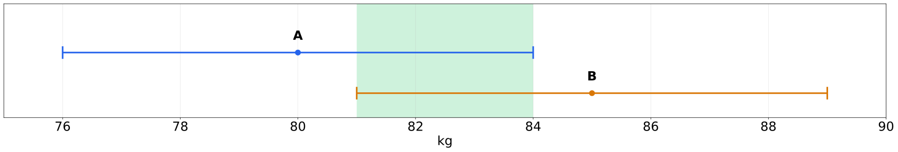
Two Scales, Different Accuracy
- A ± 1.5, B ± 4.5: 교집합 80.5 ~ 81.5 kg, A 단독(80)도 평균(82.5)도 불가능한 값
- A ± 0.5, B ± 4.5: 가능한 값은 80.5 kg 하나, 부정확한 센서 둘로 정확한 결과
핵심: 부정확한 센서 두 개로도 매우 정확한 추정 가능. 정확도가 낮은 정보라도 버리지 않는 것이 필터의 출발점
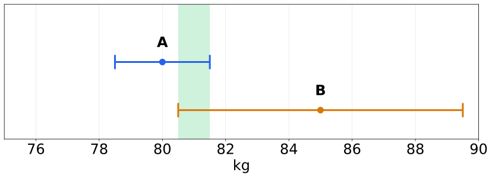
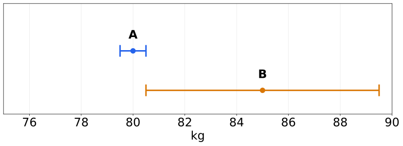
One Scale, Many Readings
- 한 저울로 체중을 1,000 번 측정해 평균 계산, 균등분포와 정규분포 두 가지 잡음으로 비교
- 결과: 두 경우 모두 평균이 참값 82.5 kg 에 매우 가까움, 정규분포는 참값 근처 값이 더 많음
- 실제 센서는 정규분포에 가깝지만 수천 번 측정은 비현실적, 시간에 따라 변하는 값에는 부적합
- 조건: 균등 80 ~ 85 kg, 정규 82.5 ± 2.5 kg, 각 1,000 회 측정
import numpy as np uniform = np.random.uniform(80, 85, size=1000) normal = np.random.normal(82.5, 2.5, size=1000) print('Average of uniform is {:.4f}'.format(uniform.mean())) print('Average of normal is {:.4f}'.format(normal.mean())) plt.hist(uniform, bins=30, alpha=0.6, label='uniform(80, 85)'); plt.hist(normal, bins=30, alpha=0.6, label='normal(82.5, 2.5)'); plt.axvline(82.5, color='k', ls='--'); plt.legend();1 2 3 4 5 6 7 8 9 10
Average of uniform is 82.4855
Average of normal is 82.4608
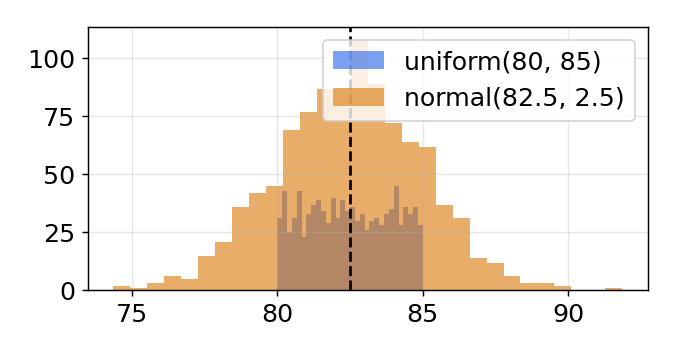
Weighing Over Days
- 85, 80.5, 84.5 kg: 오차 ± 5 kg 이면 증가와 감소 모두 설명 가능
- 84.5 ~ 85.5 kg 반복: 매일 0.5 kg 변화가 우연히 상쇄될 확률 낮음, 유지
- 79.0 → 85.5 kg: 고르지 않지만 분명한 증가 추세
핵심: 측정 해석은 대상의 물리적 성질에 의존, 사람 체중은 하루에 수 kg 씩 변할 수 없으므로 큰 변동은 잡음
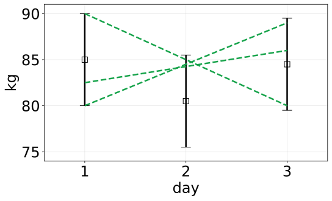
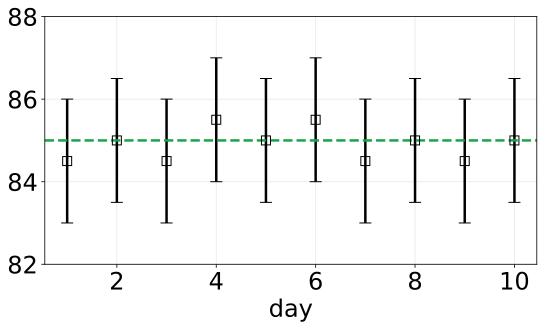
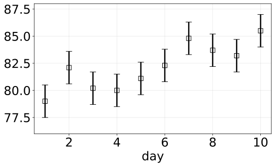
Constant or Trend
- 10 일간의 체중 측정에 체중 불변 (평균 수평선) 과 체중 증가 (least squares 직선) 두 가설 적용
- 결과: 모든 오차 막대를 지나는 수평선은 없음, 증가 직선은 각 측정 가까이를 지나 더 타당
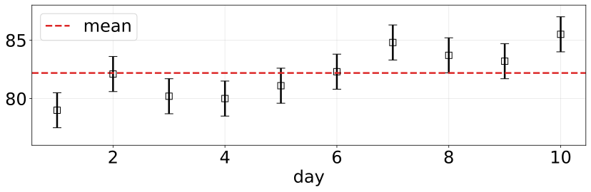
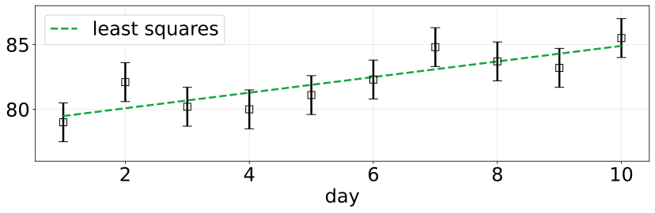
zs = weights[:10] np.mean(zs) np.polyfit(range(1, 11), zs, 1) # k, b1 2 3
82.19
[ 0.60181818 78.88 ]
Prediction Meets Measurement
- 가정: 하루 약 0.5 kg 증가 (근거는 사고 실험상 생략)
- 초기 추정: 첫 측정 79.0 kg 그대로 수용
- 예측: 79.0 + 0.5 = 79.5 kg
- 측정: 다음 날 82.1 kg, 예측과 불일치
- 추정 범위: 예측 79.5 와 측정 82.1 사이
핵심: 측정만 쓰면 예측이 무의미, 예측만 쓰면 측정 무시, 예측과 측정의 혼합이 출발점
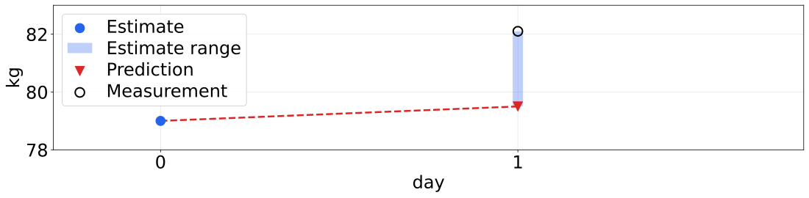
Blending with a Scale Factor
- 4/10: 임의로 고른 값, 예측을 측정보다 조금 더 신뢰한다는 믿음
- residual: 측정과 예측의 차이, 그림의 검은 세로선
- 성능: residual 이 작을수록 좋은 필터
핵심: 오차 있는 두 값은 출처와 무관하게 그 사이 값으로 결합, 저울 둘이든 저울과 예측이든 같은 수식
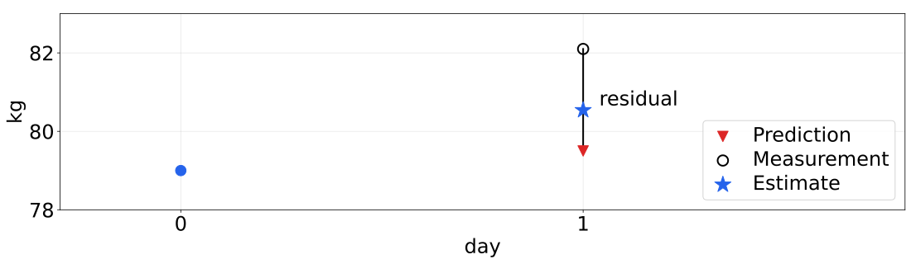
Fixed Gain Rate
- 실제 증가율 0.5 kg/day 를 가정해 매일 예측한 뒤, 측정과 예측 사이 값으로 추정 갱신
- 결과: 추정은 늘 측정과 예측 사이, 측정보다 곧고 시간이 갈수록 추세선에 근접, 단 정답 증가율을 가정한 결과
- 조건: time_step 1.0, scale_factor 4/10, 초기 80 kg, 증가율 0.5 kg/day, 로그는 do_print=True
def predict_using_gain_guess(estimated_weight, gain_rate, do_print=False): estimates, predictions = [estimated_weight], [] for z in weights: # 'z' for measurements # predict new position predicted_weight = estimated_weight + gain_rate * time_step # update filter estimated_weight = predicted_weight + scale_factor * ( z - predicted_weight) estimates.append(estimated_weight) predictions.append(predicted_weight) if do_print: gh.print_results(estimates, predicted_weight, estimated_weight) return estimates, predictions estimates, predictions = predict_using_gain_guess( initial_estimate, gain_rate=0.5) gh.plot_gh_results(weights, estimates, predictions, [80, 86])1 2 3 4 5 6 7 8 9 10 11 12 13 14 15 16 17 18
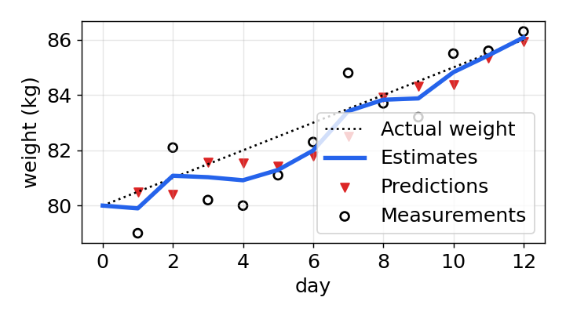
Right Guess, Wrong Guess
- 같은 필터에 증가율을 g_rate 로 지정, 실제 증가율 0.5 와 다른 값으로 바꿔 가며 재실행
- 결과: 증가율이 틀리면 추정이 측정에서 빠르게 벗어남, 추정이 조금씩 오르지만 적응이 너무 느림
- 변화율을 미리 맞혀야 하는 필터는 실용성 없음, 변화율이 바뀌는 순간 실패
- 조건: g_rate 를 실제 증가율 0.5 에서 -0.5 등 다른 값으로 바꿔 재실행
g_rate = 0.5 #gain_rate e, p = predict_using_gain_guess(initial_estimate, g_rate) gh.plot_gh_results(weights, e, p, [80, 86])1 2 3
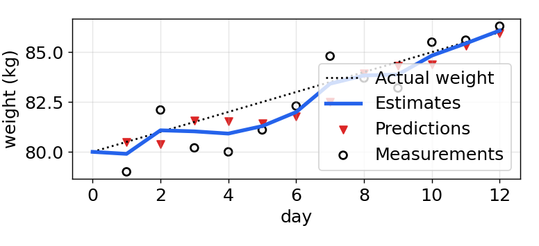
Estimating the Gain Rate
- 관찰: 측정이 암시하는 증가율 2.2 kg/day, 가정 0.5
- 방법: 같은 도구 재사용, 두 값 사이 값 선택, 비율 1/3
핵심: 잡음 섞인 두 측정에서도 증가율 정보 추출 가능, 잡음이 있어도 데이터가 추측보다 우수
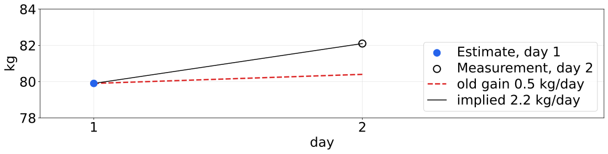
Updating the Gain Rate
- 증가율을 상수로 두지 않고 매일 residual 로 갱신, 체중은 4/10, 증가율은 1/3 비율로 보정
- 결과: 초기 증가율이 틀려도 며칠 뒤부터 증가율을 바로잡아 체중을 정확히 예측
- 조건: weight_scale 4/10, gain_scale 1/3, time_step 1 day, 초기 weight 80, gain_rate -0.5
from ipywidgets import interact, FloatSlider def plot_gain_update(weight, gain_rate): estimates, predictions = [weight], [] for z in weights: # prediction step weight = weight + gain_rate*time_step gain_rate = gain_rate predictions.append(weight) # update step residual = z - weight gain_rate = gain_rate + gain_scale * (residual/time_step) weight = weight + weight_scale * residual estimates.append(weight) gh.plot_gh_results(weights, estimates, predictions, [80, 86]) interact(plot_gain_update, weight=FloatSlider(value=80., min=75., max=85., step=.5), gain_rate=FloatSlider(value=-0.5, min=-2., max=2.));1 2 3 4 5 6 7 8 9 10 11 12 13 14 15 16 17
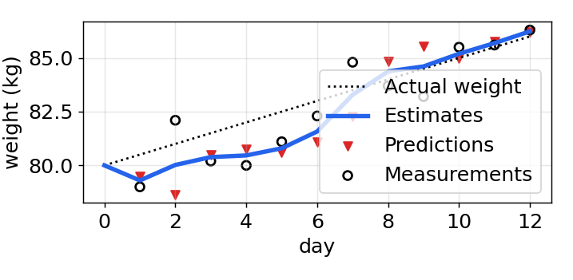
The g-h Filter
- g: 측정값(체중)에 대한 비율, 앞의 4/10
- h: 측정의 시간 변화율(kg/day)에 대한 비율, 앞의 1/3
- 다른 이름: α-β filter, α 와 β 는 같은 계수의 다른 이름
- 같은 계열: Kalman filter, Least Squares filter, Benedict-Bordner filter
- 차이: g 와 h 를 정하는 방식만 다르고 알고리즘은 동일
핵심 원칙
- 정보 보존: 여러 데이터가 하나보다 정확, 아무리 부정확해도 버리지 않음
- 사이 값: 두 데이터 사이의 값을 골라 더 정확한 추정 생성
- 예측: 현재 추정과 예상 변화량으로 다음 측정값과 변화율 예측
- 갱신: 새 추정은 예측과 측정 사이, 각각의 정확도에 비례한 위치
공통 구조: Kalman filter 를 포함한 많은 필터의 기반, 필터마다 g 와 h 를 정하는 방식만 다름
Predict and Update
Initialization
- 필터 상태 초기화
- 상태에 대한 믿음(belief) 초기화
Predict
- 시스템 거동으로 다음 시점의 상태 예측
- 예측의 불확실성을 반영해 믿음 조정
Update
- 측정값과 그 정확도에 대한 믿음 획득
- 추정 상태와 측정 사이의 residual 계산
- 새 추정은 residual 선 위의 한 점
prediction vs estimate: prediction 은 측정 전 모델로만 계산한 값, estimate 는 측정으로 prediction 을 보정한 값

Terminology
system (plant)추정 대상. plant 는 제어 이론 용어
state관심 있는 현재 값. 보통 숨겨져 있음 (hidden)
measurement시스템을 측정한 값. 관측 가능 (observable)
state estimate필터가 추정한 상태. 줄여서 estimate
process model시스템의 수학적 모델. 센서는 포함하지 않음
process error모델의 오차. 정확한 값은 알 수 없음
system propagationpredict 단계. 상태를 미래로 전파
measurement updateupdate 단계
epochpropagation + update 한 번
추정 문제의 정의: 관측 가능한(observable) 측정으로 숨겨진(hidden) 상태를 추정하는 것
Prediction or Measurement
- 질문: 예측과 측정 중 어느 쪽을 더 믿을지 결정
- 기준: 모델이 정확하면 예측, 센서가 정확하면 측정에 가중치
Train
- 특성: 무겁고 느림, 선로에 구속
- 예: 23 km, 18 kph, 측정 ± 250 m, 1 초 뒤 23.005 km
- 결정: 예측에 큰 가중치
Prediction
Measurement
Thrown ball
- 특성: 공기 저항으로 포물선 이탈
- 예: 경기장 영상 추적, 측정과 모델 모두 보통
- 결정: 예측과 측정 비슷하게
Prediction
Measurement
Balloon in a hurricane
- 특성: 짧은 시간 외에는 모델 없음
- 예: 1 초에 10 mile 이동 불가만 확실
- 결정: 측정에 큰 가중치
Prediction
Measurement
핵심: 다소 부정확한 측정과 다소 부정확한 모델을 섞어, 둘 중 어느 것보다 나은 추정을 얻는 것
Notation
- z: 측정값, 일부 문헌은 y
- 아래 첨자 k: 시간 단계, z_k 는 k 번째 측정
- 굵은 글씨: 벡터 또는 행렬
- x 위의 점: Newton 표기, 시간 미분 = 속도
- 초기 상태 x_0 에서 시작, k-1 의 값으로 k 를 예측한 뒤 z_k 와 예측 사이의 점을 추정값 x_k 로 선택
g-h filter in symbols
윗줄(bar): 예측값, r: residual. 코드의 x_pred, residual, x_est 에 대응
Exercise: Write Generic Algorithm
- 체중 전용 변수 이름 (weight_scale, gain_rate) 을 x, dx, g, h 로 바꿔 범용 g_h_filter 함수로 작성
- 결과: 체중 예제와 같은 추정, 알고리즘은 적용 문제와 무관하게 동일
- 조건: x0 = 80 kg, dx = 0.5 kg/day, g = 0.6, h = 2/3, dt = 1
def g_h_filter(data, x0, dx, g, h, dt=1.): x_est = x0 results = [] for z in data: # prediction step x_pred = x_est + (dx*dt) dx = dx # update step residual = z - x_pred dx = dx + h * (residual) / dt x_est = x_pred + g * residual results.append(x_est) return np.array(results) data = g_h_filter(data=weights, x0=80., dx=0.5, g=6./10, h=2./3, dt=1.) plot_g_h_results(weights, data)1 2 3 4 5 6 7 8 9 10 11 12 13 14 15 16
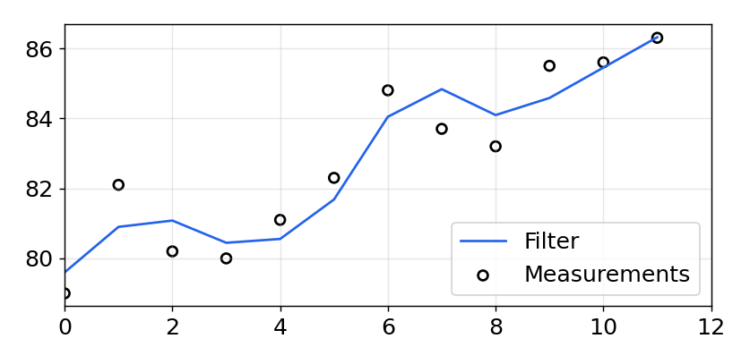
Choice of g and h
- 구분 기준: g 와 h 를 정하는 방식
- Kalman filter: 매 단계 g 와 h 를 동적으로 변경
- 관계: Kalman filter 는 수학적으로 g-h 알고리즘으로 환원
- 이 장의 목표: g, h 변화가 결과에 주는 영향을 예제로 확인
| 방식 | g, h |
|---|---|
| Constant | 고정 상수 |
| Constrained | 허용 범위 안 상수 (Benedict-Bordner) |
| Dependent | |
| Dynamic | 매 단계 변경 (Kalman) |
필터 계열: g-h filter 는 단일 필터가 아닌 필터 계열의 분류, 변형만 11 종 이상
Kalman filter: 설계 기준이 수학적으로 g 와 h 로 환원, 따라서 Kalman filter 도 g-h filter
Exercise: Create Measurement Function
- 시작값, 단계별 변화량, 개수, 잡음 크기를 받아 신호에 white noise 를 더한 시험 데이터 생성
- randn() 은 0 중심 난수, 참값을 알고 있으므로 필터 출력이 참값을 얼마나 따르는지 비교 가능
- 결과: 필터 출력이 잡음 섞인 측정보다 매끄럽게 참값 직선을 따라감
- 조건: 참값 x0 + dx*i, 잡음 randn()*1, 측정 30 개, g = 0.2, h = 0.02
from numpy.random import randn def gen_data(x0, dx, count, noise_factor): return [x0 + dx*i + randn()*noise_factor for i in range(count)] measurements = gen_data(0, 1, 30, 1) data = g_h_filter(data=measurements, x0=0., dx=1., dt=1., g=.2, h=0.02) plot_g_h_results(measurements, data)1 2 3 4 5 6 7 8 9 10
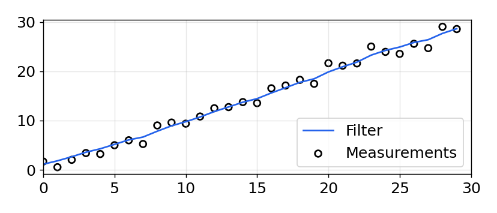
Exercise: Bad Initial Conditions
- 참값은 5 에서 시작해 매 단계 2 증가, 초기 추정만 100 으로 크게 틀리게 설정
- 결과: 추정이 데이터 위아래로 오버슈트와 언더슈트를 반복하며 수렴하는 ringing 발생
- ringing 은 필터에서 흔한 현상, 필터 설계의 상당 부분이 ringing 최소화에 할애
- 조건: 실제 시작값 5, dx = 2, 초기 추정 100, 잡음 10, g = 0.2, h = 0.02
zs = gen_data(x0=5., dx=2., count=100, noise_factor=10) data = g_h_filter(data=zs, x0=100., dx=2., dt=1., g=0.2, h=0.02) plot_g_h_results(measurements=zs, filtered_data=data)1 2 3 4 5 6
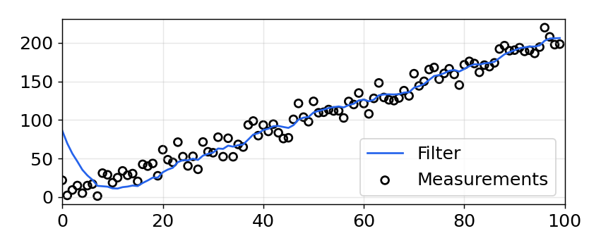
Exercise: Extreme Noise
- 같은 시험을 잡음 100 으로 반복, ringing 을 없애기 위해 초기 추정은 참값 5 로 설정
- 결과: 출력 변동은 측정보다 작지만 참값 직선과 거리가 멀고 곳곳에서 오버슈트, 언더슈트
- 잡음을 매우 크게 넣은 경우로, 이 결과가 필터링의 최선인지는 아직 판단 불가
- 조건: 초기값 5 로 정확, dx = 2, 잡음 100 (dx 의 50 배), g = 0.2, h = 0.02
zs = gen_data(x0=5., dx=2., count=100, noise_factor=100) data = g_h_filter(data=zs, x0=5., dx=2., g=0.2, h=0.02) plot_g_h_results(measurements=zs, filtered_data=data)1 2 3 4 5 6
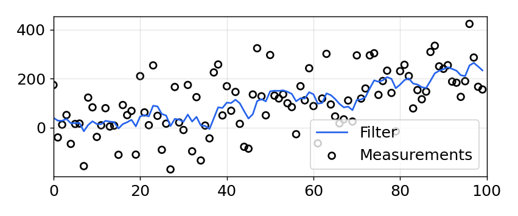
Exercise: The Effect of Acceleration
- 매 단계 속도가 증가하는 등가속 데이터를 만들어 등속 모델 g-h filter 에 입력
- 결과: 추정이 항상 측정보다 뒤처짐, h 로 를 일부만 보정하므로 다음 단계에서도 다시 부족
- lag error: g, h 조정으로 해결 불가, 필터 성능은 시스템을 표현한 수학 모델 수준에 한정
- 조건: 10 m 정지 상태에서 9 m/s^2 로 등가속, 잡음 없음, 예측에 가속도 항 없음
def gen_data(x0, dx, count, noise_factor, accel=0.): zs = [] for i in range(count): zs.append(x0 + accel * (i**2) / 2 + dx*i + randn()*noise_factor) dx += accel return zs zs = gen_data(10., 0., 20, noise_factor=0, accel=9.) data = g_h_filter(data=zs, x0=10., dx=0., g=0.2, h=0.02) plot_g_h_results(zs, data)1 2 3 4 5 6 7 8 9 10
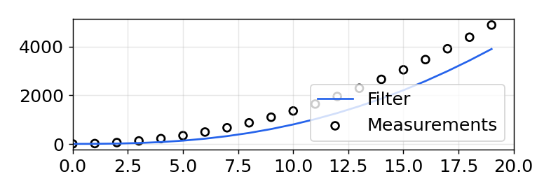
Exercise: Varying g
- dx = 5, 잡음 50 인 같은 데이터를 g = 0.1, 0.4, 0.8 세 필터로 처리, g 는 측정과 예측의 선택 비율
- 결과: g 가 클수록 측정을 더 따름, g = 0.8 은 신호를 거의 그대로 따라 잡음을 거의 제거하지 못함
- 잡음 제거만 보면 작은 g 가 유리해 보이지만, 측정을 대부분 무시하는 결과
- 조건: 같은 데이터 (dx = 5, 잡음 50), g = 0.1, 0.4, 0.8, h = 0.01
np.random.seed(100) zs = gen_data(x0=5., dx=5., count=50, noise_factor=50) data1 = g_h_filter(data=zs, x0=0., dx=5., dt=1., g=0.1, h=0.01) data2 = g_h_filter(data=zs, x0=0., dx=5., dt=1., g=0.4, h=0.01) data3 = g_h_filter(data=zs, x0=0., dx=5., dt=1., g=0.8, h=0.01) plots.plot_measurements(zs, color='k') plots.plot_filter(data1, label='g=0.1', marker='s', c='C0') plots.plot_filter(data2, label='g=0.4', marker='v', c='C1') plots.plot_filter(data3, label='g=0.8', c='C2') plt.legend(loc=4)1 2 3 4 5 6 7 8 9 10 11
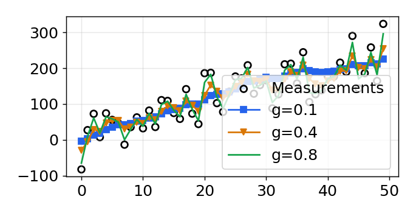
Exercise: Varying g
- = 1 로 9 단계 증가한 뒤 = 0 으로 멈추는 잡음 없는 신호에 g = 0.1, 0.5, 0.9 적용
- 결과: 작은 g 는 잡음뿐 아니라 실제 신호 변화까지 걸러 응답이 늦음
- 조건: 9 단계 증가 후 14 에서 정지, 잡음 없음, g = 0.1, 0.5, 0.9, h = 0.01
zs = [5, 6, 7, 8, 9, 10, 11, 12, 13, 14] for i in range(50): zs.append(14) data1 = g_h_filter(data=zs, x0=4., dx=1., dt=1., g=0.1, h=0.01) data2 = g_h_filter(data=zs, x0=4., dx=1., dt=1., g=0.5, h=0.01) data3 = g_h_filter(data=zs, x0=4., dx=1., dt=1., g=0.9, h=0.01) plots.plot_measurements(zs) plots.plot_filter(data1, label='g=0.1', marker='s', c='C0') plots.plot_filter(data2, label='g=0.5', marker='v', c='C1') plots.plot_filter(data3, label='g=0.9', c='C3') plt.legend(loc=4) plt.ylim([6, 20]);1 2 3 4 5 6 7 8 9 10 11 12
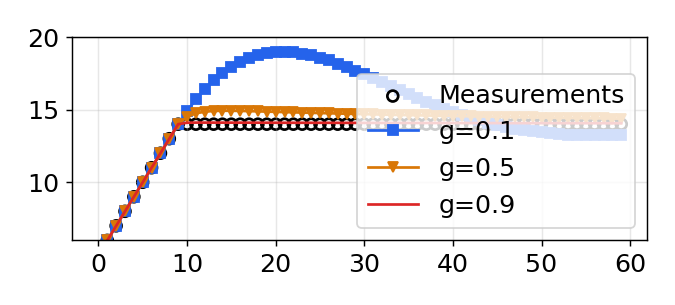
Goldilocks: 적당한 g 하나로는 부족, 필터마다 문제의 수학적 성질에 따라 g, h 결정
Exercise: Varying g
- 증가와 정지를 반복하는 계단형 데이터에 Benedict-Bordner 방식으로 정한 두 g, h 조합 적용
- Benedict-Bordner filter: 의 계단 변화에서 생기는 과도 오차를 최소화하도록 고안
- 결과: 계단 변화에는 유리한 조합, 다른 형태의 변화에는 최적이 아님
- 조건: 증가와 정지를 반복하는 데이터, 잡음 없음, (g, h) = (0.302, 0.054), (0.546, 0.205)
zs = [5,6,7,8,9,9,9,9,9,10,11,12,13,14, 15,16,16,16,16,16,16,16,16,16,16,16] data1 = g_h_filter(data=zs, x0=4., dx=1., dt=1., g=.302, h=.054) data2 = g_h_filter(data=zs, x0=4., dx=1., dt=1., g=.546, h=.205) plots.plot_measurements(zs) plots.plot_filter(data2, label='g=0.546, h=0.205', marker='s', c='C0') plots.plot_filter(data1, label='g=0.302, h=0.054', marker='v', c='C1') plt.legend(loc=4) plt.ylim([6, 18]);1 2 3 4 5 6 7 8 9 10 11 12
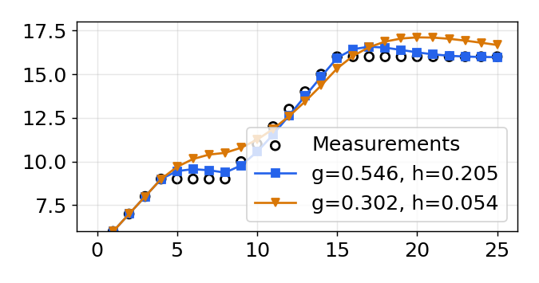
Varying h
- 0 에서 1 로 천천히 증가하는 잡음 없는 측정 50 개에, g 는 고정하고 초기 와 h 만 변경
- 결과: 초기 가 거의 맞으면 신호에 밀착, = 2 로 크게 틀리면 ringing 후 안착
- h = 0.5 로 키우면 ringing 진폭 감소, 주파수 증가, 조금 더 빠른 안착
- 조건: 0 → 1 직선 측정 50 개, 잡음 없음, g = 0.2, (dx, h) = (0, 0.05), (2, 0.05), (2, 0.5)
zs = np.linspace(0, 1, 50) data1 = g_h_filter(data=zs, x0=0, dx=0., dt=1., g=.2, h=0.05) data2 = g_h_filter(data=zs, x0=0, dx=2., dt=1., g=.2, h=0.05) data3 = g_h_filter(data=zs, x0=0, dx=2., dt=1., g=.2, h=0.5) plots.plot_measurements(zs) plots.plot_filter(data1, label='dx=0, h=0.05', c='C0') plots.plot_filter(data2, label='dx=2, h=0.05', marker='v', c='C1') plots.plot_filter(data3, label='dx=2, h=0.5', marker='s', c='C2') plt.legend(loc=1);1 2 3 4 5 6 7 8 9 10 11
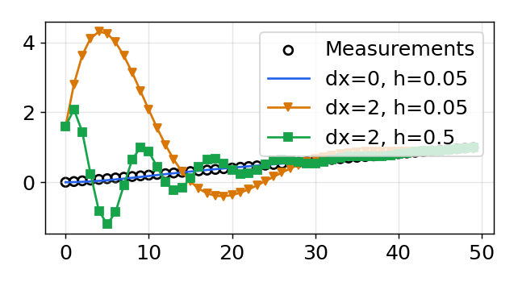
Interactive Example: Sliders
- g, h 를 최소로 하면 필터가 데이터를 완벽히 추적, 증가율을 정확히 예측했기 때문
- 를 5 와 다르게 하면 데이터에서 벗어나 다시 따라오지 못함, g 또는 h 를 다시 키우면 복귀
- 슬라이더를 움직이기 전에 결과를 먼저 예측하고, 조작 후 예측과의 차이를 설명
- 조건: zs1: x0 = 5, dx = 5, noise_factor = 50, 측정 100 개, 슬라이더를 놓는 순간 다시 실행
from ipywidgets import interact, FloatSlider zs1 = gen_data(x0=5, dx=5., count=100, noise_factor=50) fig = None def interactive_gh(x, dx, g, h): global fig if fig is not None: plt.close(fig) fig = plt.figure() data = g_h_filter(data=zs1, x0=x, dx=dx, g=g, h=h) plt.scatter(range(len(zs1)), zs1, edgecolor='k', facecolors='none', marker='o', lw=1) plt.plot(data, color='b') interact(interactive_gh, x=FloatSlider(value=0, min=-200, max=200), dx=FloatSlider(value=5, min=-50, max=50), g=FloatSlider(value=.1, min=.01, max=2, step=.02), h=FloatSlider(value=.02, min=.0, max=.5, step=.01));1 2 3 4 5 6 7 8 9 10 11 12 13 14 15 16
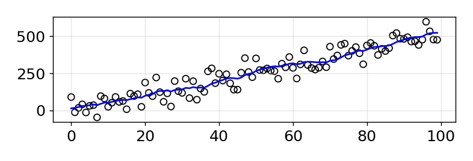
Don't Lie to the Filter
- 잡음 100 의 데이터에 g = h = 0 을 적용하자 잡음 속에서도 완벽해 보이는 직선 출력
- 원인: g = h = 0 이면 측정을 무시하고 매 단계 x + dx*dt 만 계산하므로 직선은 당연한 결과
- 측정을 무시한 필터는 무용, 시험 데이터에서는 좋아 보이는 결과를 쉽게 만들 수 있음
- 조건: 잡음 100, dx = 0.2, g = h = 0
zs = gen_data(x0=5., dx=.2, count=100, noise_factor=100) data = g_h_filter(data=zs, x0=5., dx=.2, dt=1., g=0., h=0.) plots.plot_measurements(zs) plots.plot_filter(data, label='filter')1 2 3 4 5 6
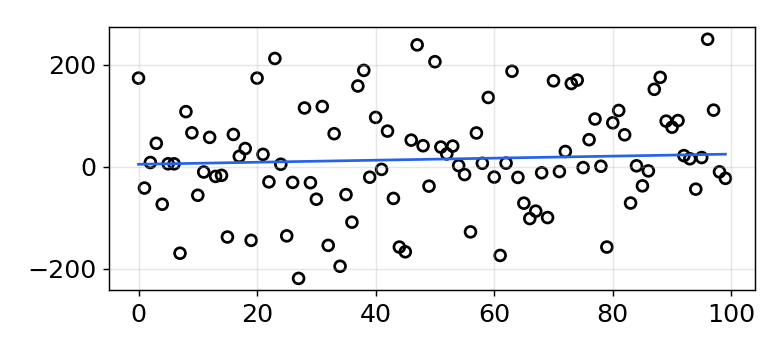
Don't Lie to the Filter
- 특정 시험 데이터에 맞춰 g, h 를 매우 작게 잡은 필터를 실제 dx = -2 인 데이터에 적용
- 결과: 초기 의 오류를 측정으로 바로잡지 못해 추정이 측정에서 계속 멀어짐
- 조건: 실제 dx = -2, 초기 dx = 2, 잡음 5, g = 0.005, h = 0.001
zs = gen_data(x0=5, dx=-2, count=100, noise_factor=5) data = g_h_filter(data=zs, x0=5., dx=2., dt=1., g=.005, h=0.001) plots.plot_measurements(zs) plots.plot_filter(data, label='filter')1 2 3 4 5 6
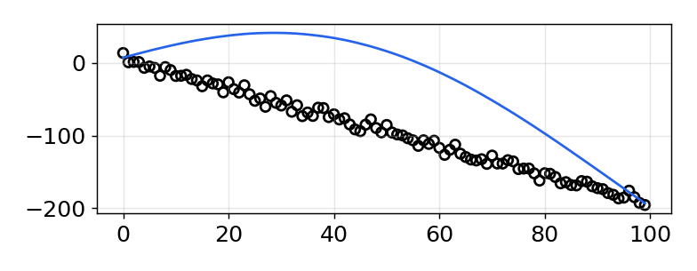
핵심: g 와 h 는 특정 데이터셋이 아닌 실제 시스템의 거동을 반영해야 함
Simulating the Train
- 23 km 지점에서 15 m/s 로 달리는 열차 위치를 1 초마다 ± 500 m 오차로 측정, 필터 없이 생성
- 결과: 실제 열차로는 불가능한 움직임이 보일 만큼 부정확, 열차는 속도를 빠르게 못 바꾼다는 점이 단서
- 조건: 23 km, 15 m/s 등속, 측정 오차 ± 500 m, 100 초
from numpy.random import randn def compute_new_position(pos, vel, dt=1.): """ dt is the time delta in seconds.""" return pos + (vel * dt) def measure_position(pos): return pos + randn()*500 def gen_train_data(pos, vel, count): zs = [] for t in range(count): pos = compute_new_position(pos, vel) zs.append(measure_position(pos)) return np.asarray(zs) pos, vel = 23.*1000, 15. zs = gen_train_data(pos, vel, 100) plt.plot(zs / 1000.) # convert to km plots.set_labels('Train Position', 'time(sec)', 'km')1 2 3 4 5 6 7 8 9 10 11 12 13 14 15 16 17 18
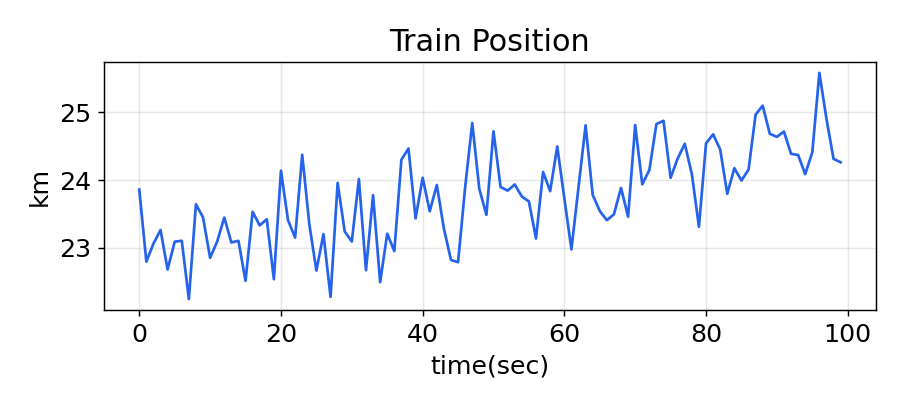
Choosing g and h for a Train
- 측정이 매우 부정확하므로 작은 g, 열차는 급가감속이 불가능하므로 작은 h 를 직관적으로 선택
- 결과: g = 0.01, h = 0.0001 은 초기 추정만으로 양호한 추적
- g = 0.2 는 추정 위치와 속도 변동이 커지고, h = 0.1 은 열차보다 빠르게 속도를 바꿈
- 조건: g = 0.01, h = 0.0001, 이후 g = 0.2 또는 h = 0.1 로 바꿔 재실행
pos = 23.*1000 zs = gen_train_data(pos=pos, vel=15., count=100) data = g_h_filter(data=zs, x0=pos, dx=15., dt=1., g=.01, h=0.0001) plot_g_h_results(zs/1000., data/1000., 'g=0.01, h=0.0001')1 2 3 4
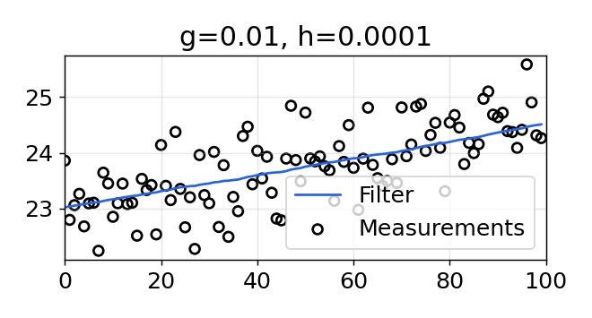
Train with Acceleration
- 열차가 매 초 0.2 m/s 씩 가속하는 데이터로 바꾸고 같은 작은 g, h 로 필터링
- 결과: h = 0.0001 은 가속을 따라가지 못함, h 를 0.001 로 키우면 추적하지만 덜 매끄러움
- 모델에 없는 속도 변화는 h 로 대응
- 조건: 매 초 0.2 m/s 가속, g = 0.01, h = 0.001 (0.0001 에서 증가)
def gen_train_data_with_acc(pos, vel, count): zs = [] for t in range(count): pos = compute_new_position(pos, vel) vel += 0.2 zs.append(measure_position(pos)) return np.asarray(zs) zs = gen_train_data_with_acc(pos=pos, vel=15., count=100) data = g_h_filter(data=zs, x0=pos, dx=15., dt=1., g=.01, h=0.001) plot_g_h_results(zs/1000., data/1000., 'g=0.01, h=0.001')1 2 3 4 5 6 7 8 9 10 11 12 13
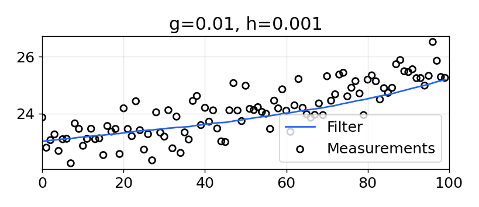
Summary
- 핵심 아이디어: 부정확한 측정 + 부정확한 모델 → 둘보다 나은 추정
- 알고리즘: initialize → predict → update 반복, 추정은 residual 선 위
- g: 측정 신뢰도, 크면 측정 추종, 작으면 잡음 제거와 응답 지연
- h: 변화율 반응, 크면 빠른 반응과 잡음 민감
- 한계: 등속 모델은 가속도에서 lag error
- 설계: 임의의 g, h 는 상황마다 성능 차이
결론: 어떤 g, h 는 한 상황에서 잘 동작해도 다른 상황에서는 실패. 필터는 임의로 고르는 것이 아니라 설계하는 것